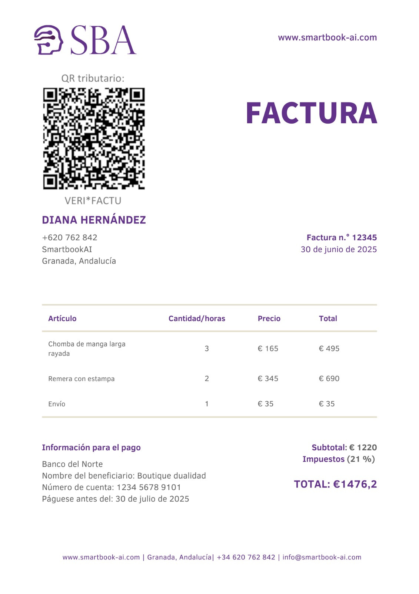

Software sencillo e intuitivo
“Al principio tenía dudas porque nunca había usado un programa con IA, pero me ha sorprendido para bien. Subo las facturas y prácticamente se organiza todo solo.”
Con Smartbook AI simplifica tu gestión contable sin necesidad de conocimientos previos. Para autónomos, pymes y gestorías.
En Smartbook AI estamos al día con las novedades legales que pronto serán obligatorias para todos los negocios.
Trabajamos para adaptar tu gestión contable a los nuevos requisitos de facturación electrónica y VERI*FACTU, de forma sencilla, automática y sin complicaciones técnicas.

Descúbrenos
Empezando desde tan solo 9,99€ al mes puedes generar facturas, nóminas y albaranes en segundos usando los datos de tus clientes, proveedores y empleados solamente usando un chat de WhatsApp.
¿Quieres saber más?Nuestra inteligencia artificial extrae los datos tanto de tus facturas como de tus nóminas y crea o asocia automáticamente un cliente, proveedor o un trabajador en tu espacio de trabajo.
Las pymes, especialmente, necesitan herramientas sencillas y económicas que les ayuden a centrarse en lo que realmente importa: vender, crecer y ofrecer un buen servicio. La contabilidad no debería ocupar más tiempo del necesario, y menos todavía si ese tiempo no aporta valor directo.
Comienza gratisNuestra IA extrae de cada factura la base imponible, el IVA, el total, la fecha, el proveedor, el cliente y el concepto, organizando toda la información automáticamente en tu espacio de trabajo.
Ya no dependemos de memorias, apuntes, papeles ni cálculos manuales. La automatización elimina gran parte del riesgo y permite trabajar con más tranquilidad. Además, una contabilidad organizada ayuda a ver mejor la situación real del negocio y detectar problemas antes de que sean graves.
Empieza a facturar“Al principio tenía dudas porque nunca había usado un programa con IA, pero me ha sorprendido para bien. Subo las facturas y prácticamente se organiza todo solo.”
“Reviso en lugar de hacerlo todo desde cero y eso se nota mucho en el día a día.”
“Antes teníamos todo en carpetas y Excel. Con SmartBook AI está todo ordenado y claro.”
SmartBook AI es una plataforma que automatiza la contabilidad y la gestión administrativa de tu negocio mediante inteligencia artificial. Su objetivo es que no tengas que preocuparte por tareas como facturas, organización de documentos o registros contables, ahorrándote tiempo y evitando errores.
No. Está diseñado precisamente para personas sin conocimientos contables. La plataforma es simple e intuitiva, y automatiza la mayor parte del proceso, guiándote en todo momento.
Principalmente autónomos, pequeñas empresas y asesorías. Es especialmente útil para quienes quieren simplificar su gestión diaria y no perder tiempo en tareas administrativas.
Puedes probar SmartBook AI durante 7 días sin compromiso. Durante ese tiempo tendrás acceso a todas las funcionalidades para que puedas comprobar cómo funciona y el ahorro de tiempo que supone.
Sí. La plataforma utiliza sistemas seguros y almacenamiento en la nube para proteger toda la información. Además, se aplican medidas de seguridad para garantizar la privacidad de tus datos.

Descubre cómo la inteligencia artificial ayuda a entender mejor los datos, automatizar tareas y tomar decisiones de marketing más precisas.
Leer más
La automatización permite reducir errores, ahorrar tiempo y mantener la información contable ordenada sin depender de procesos manuales.
Leer más
Los nuevos sistemas pueden leer documentos, clasificar información y acelerar tareas contables que antes requerían mucho trabajo manual.
Leer másIdentifica fallos habituales en la gestión contable y aprende cómo prevenirlos para mantener tus datos ordenados y fiables.
Leer másForma parte de nuestra comunidad en WhatsApp y resuelve tus dudas con más compañeros de SmartBook AI.
💬 Unirme